| 6 |
NonLinearSVM |
Non Linear Support Vector Classification |
5.452876 |
3.890749 |
745 |
2458 |
89 |
158 |
0.825028 |
0.965057 |
0.893285 |
0.928406 |
0.071594 |
0.857801 |
2.186839 |
0.157312 |
0.220472 |
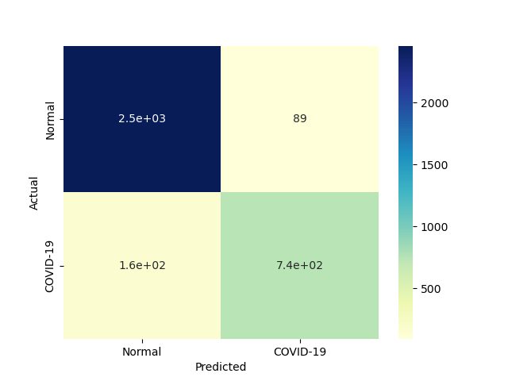 |
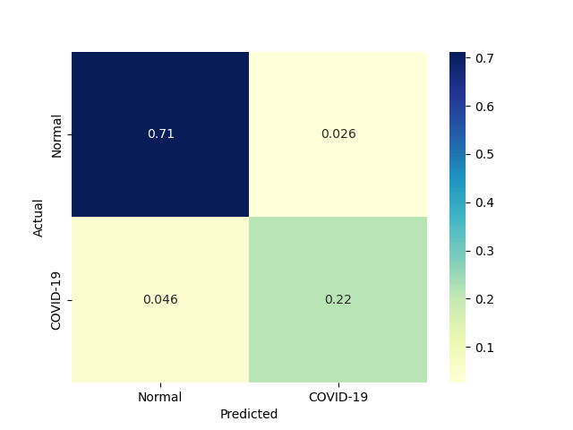 |
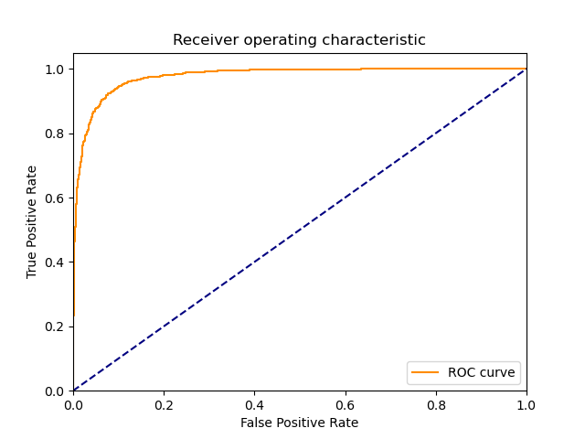 |
| 8 |
MLP |
Multi-layer Perceptron classifier. |
9.031283 |
0.015585 |
721 |
2350 |
197 |
182 |
0.798450 |
0.922654 |
0.785403 |
0.890145 |
0.109855 |
0.791873 |
1.645892 |
0.087681 |
50.810097 |
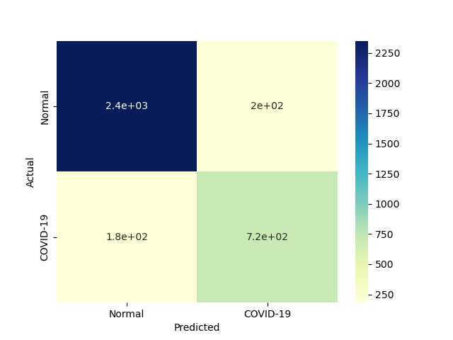 |
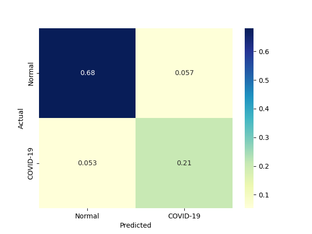 |
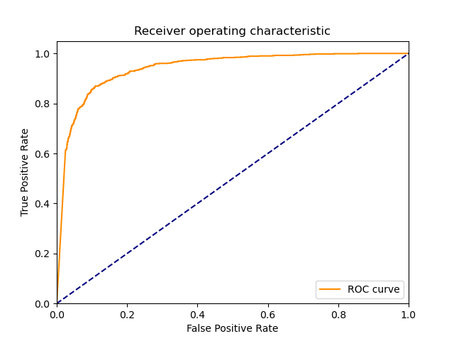 |
| 4 |
KNeighborsClassifier |
Classifier implementing the k-nearest neighbors vote |
0.003904 |
1.071087 |
593 |
2447 |
100 |
310 |
0.656700 |
0.960738 |
0.855700 |
0.881159 |
0.118841 |
0.743108 |
1.548447 |
190.328523 |
0.693788 |
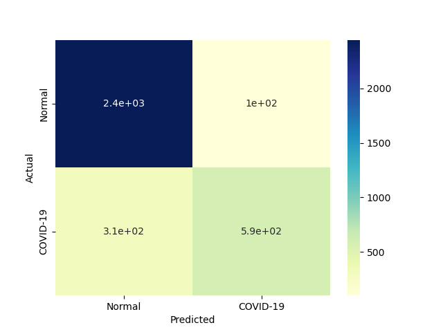 |
|
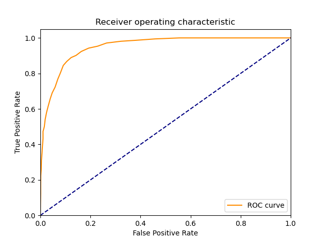 |
| 10 |
GradientBoostingClassifier |
An GradientBoost classifier |
30.484395 |
0.000000 |
483 |
2475 |
72 |
420 |
0.534884 |
0.971731 |
0.870270 |
0.857391 |
0.142609 |
0.662551 |
1.355923 |
0.021734 |
inf |
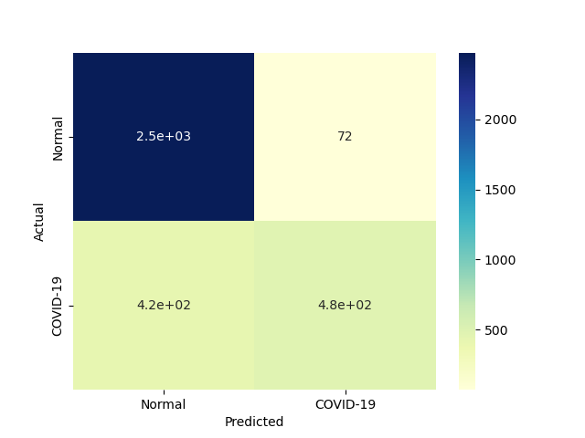 |
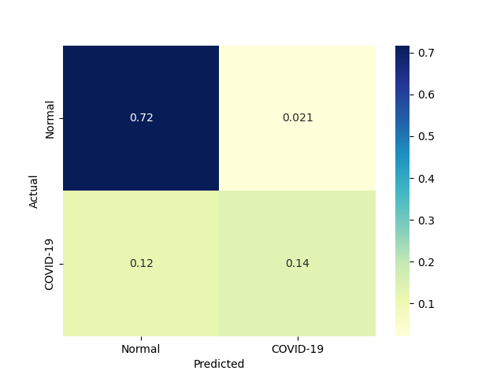 |
|
| 1 |
RealBoost |
An RealBoost classifier |
10.155863 |
0.046872 |
552 |
2386 |
161 |
351 |
0.611296 |
0.936788 |
0.774194 |
0.851594 |
0.148406 |
0.683168 |
1.332799 |
0.067268 |
14.575147 |
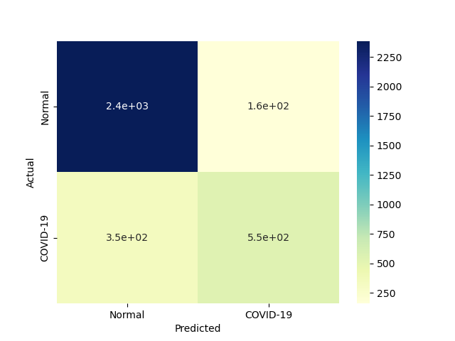 |
|
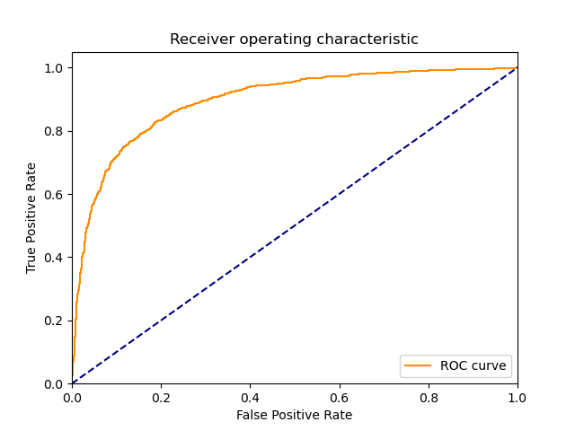 |
| 9 |
AdaBoostClassifier |
An AdaBoost classifier |
12.453117 |
0.109370 |
496 |
2357 |
190 |
407 |
0.549280 |
0.925402 |
0.723032 |
0.826957 |
0.173043 |
0.624292 |
1.192503 |
0.050131 |
5.708074 |
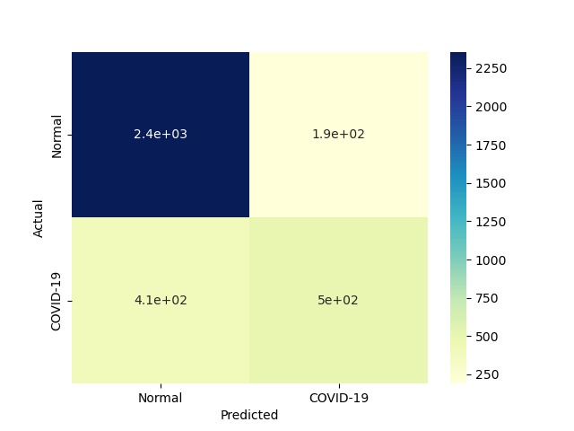 |
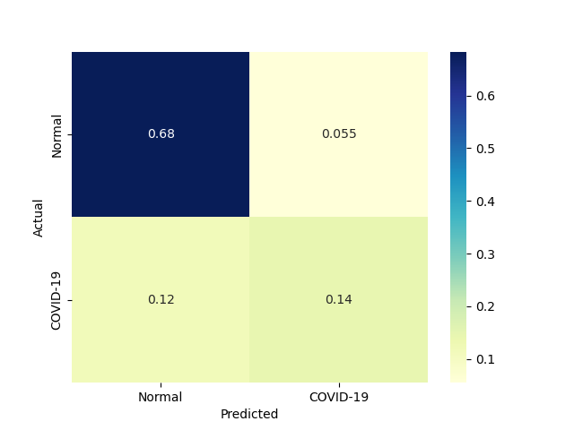 |
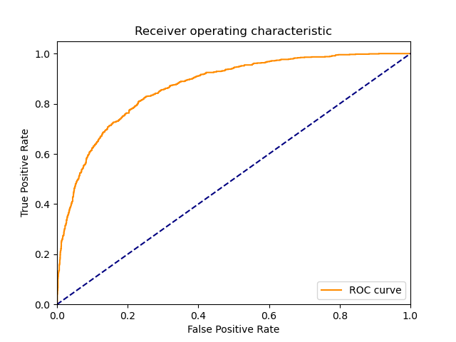 |
| 2 |
BernoulliNBC |
Naive Bayes classifier for multivariate Bernoulli models |
0.078120 |
0.031251 |
423 |
2402 |
145 |
480 |
0.468439 |
0.943070 |
0.744718 |
0.818841 |
0.181159 |
0.575119 |
1.137066 |
7.362040 |
18.403105 |
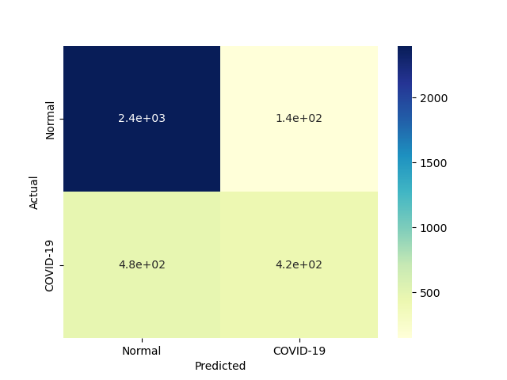 |
 |
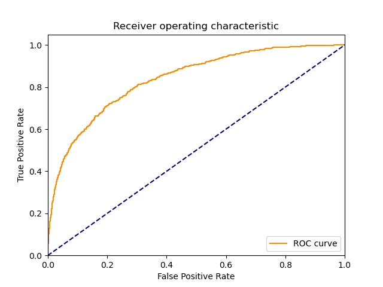 |
| 3 |
GaussianNBC |
Gaussian Naive Bayes (GaussianNB) |
0.042960 |
0.027307 |
604 |
2121 |
426 |
299 |
0.668882 |
0.832744 |
0.586408 |
0.789855 |
0.210145 |
0.624935 |
1.076119 |
14.547017 |
22.885508 |
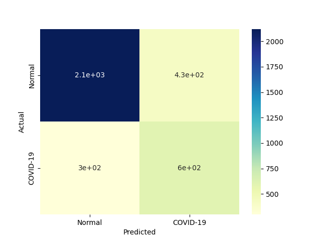 |
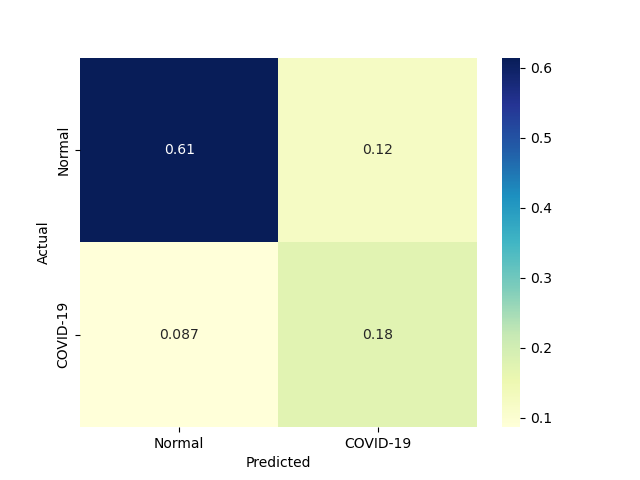 |
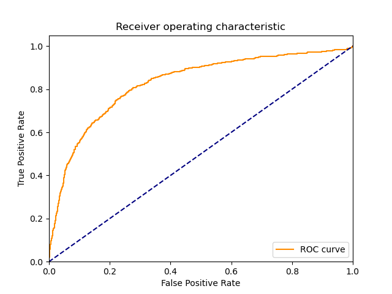 |
| 5 |
LinearSVM |
Linear Support Vector Classification |
7.808566 |
0.000000 |
642 |
1775 |
772 |
261 |
0.710963 |
0.696898 |
0.454031 |
0.700580 |
0.299420 |
0.554165 |
0.867308 |
0.070969 |
inf |
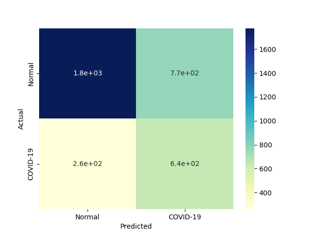 |
|
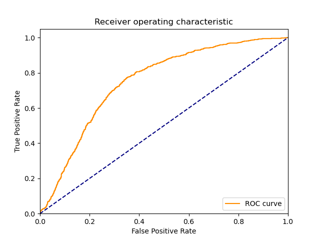 |
| 7 |
LP |
Linear perceptron classifier |
0.078079 |
0.000000 |
668 |
1558 |
989 |
235 |
0.739756 |
0.611700 |
0.403138 |
0.645217 |
0.354783 |
0.521875 |
0.782781 |
6.683896 |
inf |
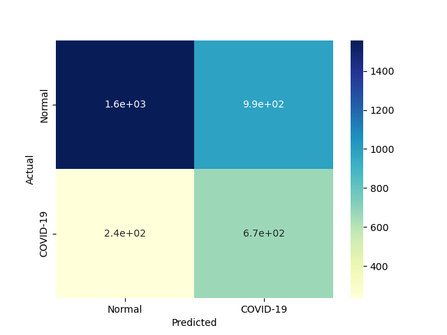 |
 |
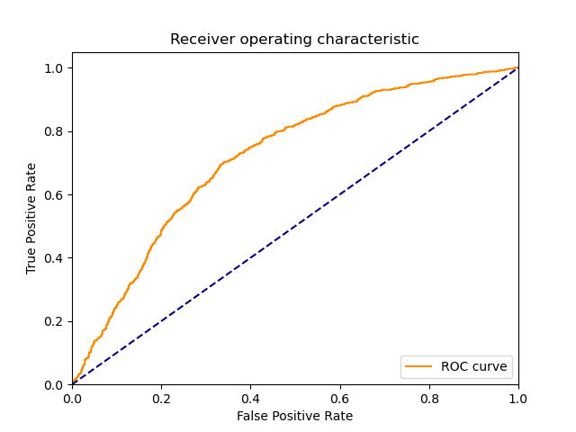 |
| 0 |
DiscreteNBC |
DiscreteNBC |
4.234385 |
2.343707 |
201 |
2165 |
382 |
702 |
0.222591 |
0.850020 |
0.344768 |
0.685797 |
0.314203 |
0.270525 |
0.663846 |
0.063888 |
0.115426 |
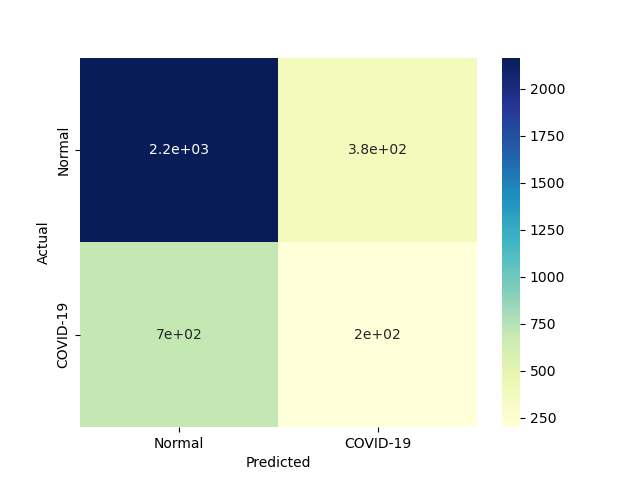 |
|
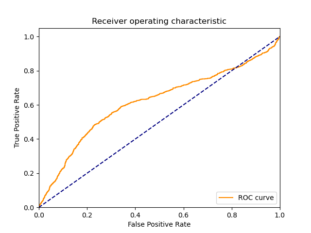 |
{kind=link}
{kind=link}
{kind=link}
{kind=link}
{kind=link}
{kind=link}
{kind=link}
{kind=link}
{kind=link}
{kind=link}
{kind=link}
{kind=link}
{kind=link}
{kind=link}
{kind=link}
{kind=link}
{kind=link}
{kind=link}
{kind=link}
{kind=link}
{kind=link}
{kind=link}
{kind=link}
{kind=link}
{kind=link}
{kind=link}
{kind=link}
{kind=link}
{kind=link}
{kind=link}
{kind=link}